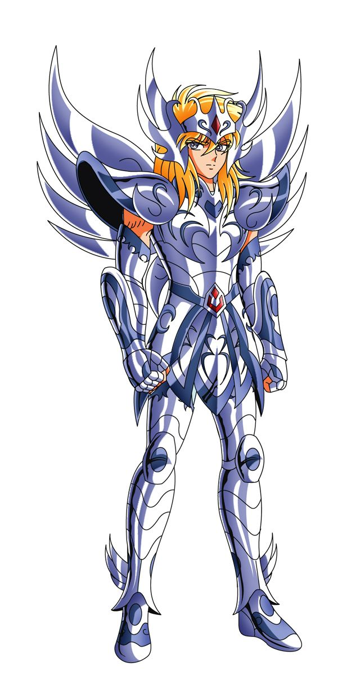

-
Hyoga #001
- Armadura de Bronze Divina
- Gelo
Hyoga nasceu no frio da sibéria e logo cedo em sua vida foi enviado para um treinamento intenso para se tornar cavaleiro de bronze. sua mãe o apoiou e após longos anos de treinamento Hyoga conseguiu conquistar sua armadura de bronze
-
Ikki #002
- Armadura de Bronze Divina
- Inferno
Ikki de Phoenix é o cavaleiro mais velho e experiente entre os cavaleiros de bronze e irmão de Shun, cavaleiro de andromeda. Passou pelo treinamento mais intenso de todos dentre os cavaleiros de bronze e surpeeendeu ao conseguir sobreviver a tal façanha. Seus cosmo é capaz de se elevar próximo à de um cavaleiro de ouro.
-
Shiryu #003
- Armadura de Bronze Divina
- Dragão
Shiryu é o detentor da armadura de dragão, cujo cavaleiro foi treinado pelo mestre ancião, dhoko de libra que participou da primeira guerra santa, detentor de cabelos longo, shiryu perde a visão em um de seus combates até a morte, embora saia com a vitória. Com certeza um dos cavaleiros mais fortes dentre eles.
-
seya #004
- Armadura de Bronze Divina
- Ar
Seya, além de protagonsita da história principal de cavaleiros do zodíaco, detem um dos maiores cosmos da saga. Em suas aventuras enfrentou diversos cavaleiros de ouro até a morte e até mesmo Deuses, dentre eles hades, poseidon e zeus. O cavaleiroo possui um affair pela Deusa Atena.